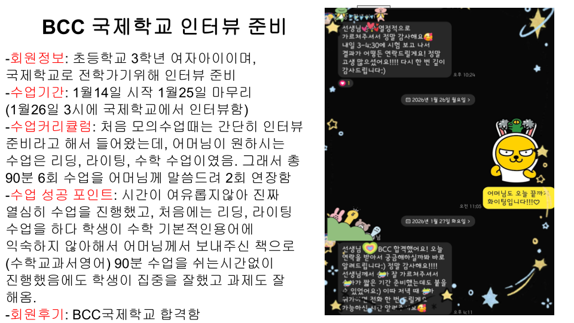
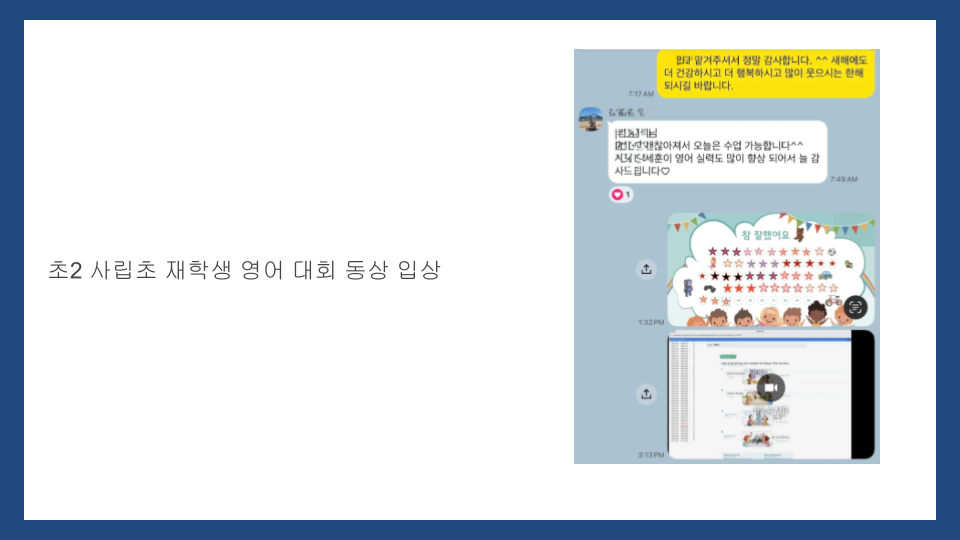
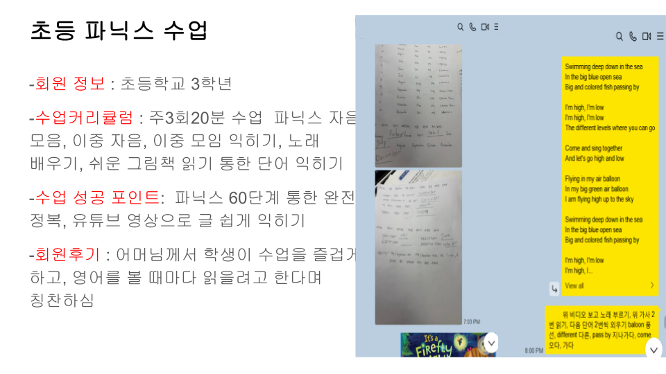
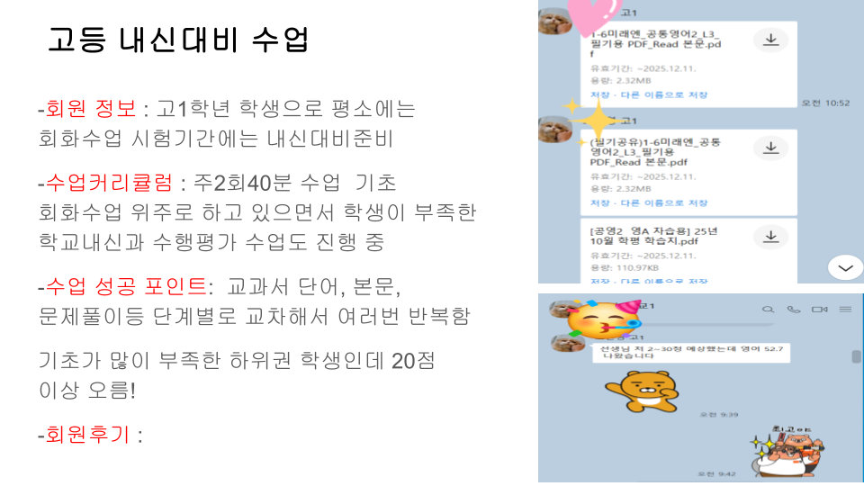
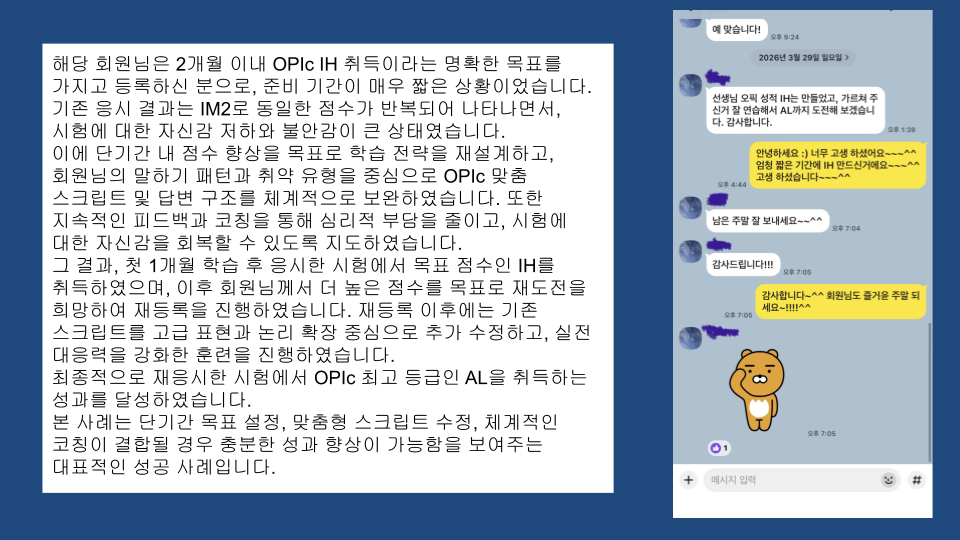
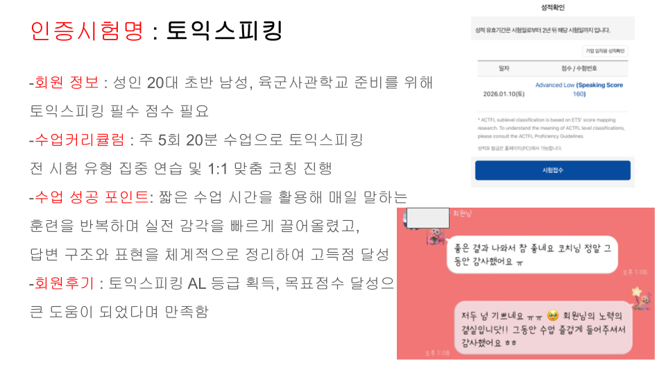
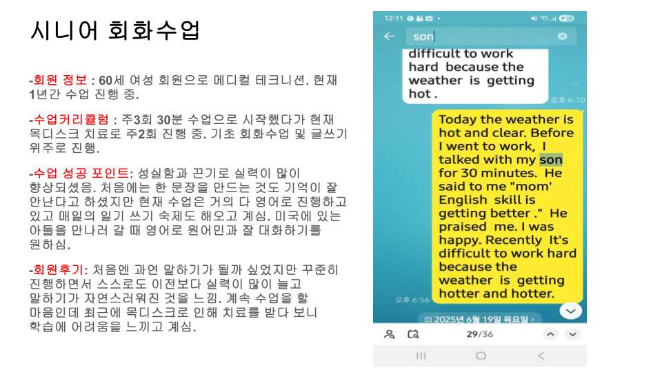
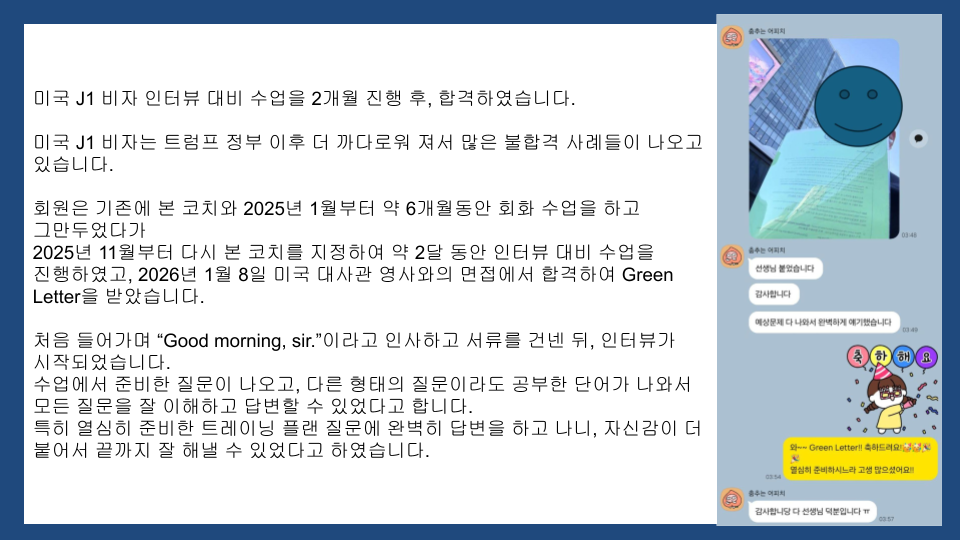
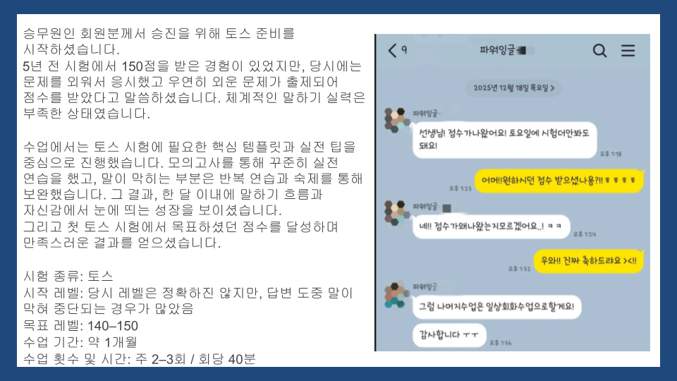

파워잉글리시로 달라진
아이부터 어른까지의 이야기
실제 수강 후기를 바탕으로 재구성했으며, 개인정보 보호를 위해 이니셜로 표기했습니다.









"아이의 영어 실력이 백지가 되어버릴까 걱정했는데, 어느새 두려움 없이 자연스러운 발음으로 말하더라고요. 영어 자체에 대한 부담감이 많이 사라진 게 느껴져요."
초등 회화 강화반
"진도를 나가기 위한 수업이 아니라 아이 실력에 맞춰 진행되는 게 가장 좋아요. 코치님의 적절한 당근과 채찍으로 말하기 두려움을 많이 극복했습니다."
초등 회화 강화반 · 약 1년 수강
"선생님이 늘 즐겁게 수업해 주시니까 대화가 겁나거나 지루하지 않아요." — 학생
"하루 10분이라도 원어민처럼 대화하니 영어 감각을 유지할 수 있어요." — 학부모
초등 회화 강화반
"10분이라는 짧은 수업 시간 덕분에 피로함이 느껴지지 않아 늘 즐겁게 진행하고 있습니다. 외국인을 만나도 먼저 말을 걸 수 있을 만큼 영어에 자신감이 생겼어요." — 이후 학교 원어민 프로그램에도 선발됐어요.
정보산업고 1학년 · 약 2년 수강
"학기 중에는 따로 시간을 내서 영어 공부하기가 어려운데, 하루 20분 짧은 수업으로 영어 감을 잃지 않고 꾸준히 공부할 수 있었어요. 회화에서 가장 중요한 건 결국 자신감이더라고요."
대학교 3학년 · 7년 이상 수강
"'한마디도 못 하던 나'에서 '부족하게나마 말을 건네는 나'로. 해외 클라이언트 앞에서 자리를 피하던 50대 직장인 두 분이 5개월 만에 먼저 말을 건네게 된 이야기예요."
50대 기업인·직장인 · 각 5개월 수강
※ vinemagazine 코칭맘 매거진에 실린 실제 수강 후기를 바탕으로 재구성했습니다.